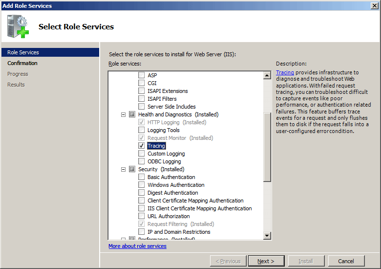
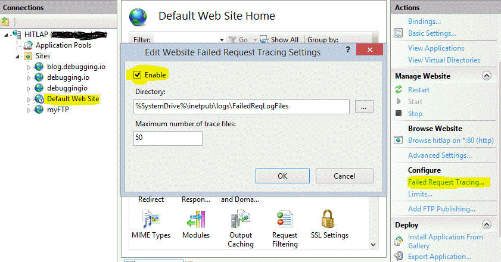

Introduction to Failed Request Tracing
IIS Troubleshooting Made Easy
Created by Rohith Rajan / @debuggingio
What is FREB ?
- provides a way to determine what exactly is happening with your requests inside IIS and ASP.NET
- An XML file generated on the server
- Generated at C:\inetpub\logs\FailedReqLogFiles
- Viewed using Internet Explorer
- Needs accompanying XSLT stylesheet freb.xsl
Prerequisites
- Make sure Tracing is installed
WINDOWS VISTA / 7 / 8 -Control panel -> Programs and Features -> Turn on Windows Features on or off.

WINDOWS SERVER 2008 / 2008 R2

Enable Failed Request Tracing
Select the Website in IIS Manager(inetmgr.exe)
In the Actions Pane ->Configure ->Failed Request Tracing

Configure Failure Definitions
Select the Website in IIS Manager
Double-click Failed Request Tracing Rules.

Add Rule definition for 200 status code

Click Next ->select Status code(s) and enter 200

Click Next and click Finish and you will see Following definition for you website

Test and View the Failure Request Log File
- Browse to any page on your website
- Now that you have generated a failed request, in windows explorer navigate to %systemdrive%\inetpub\logs\FailedReqLogFiles\W3SVC1.
-

- The folder which the trace file is generated is according to your website's ID
- Your website's ID can be found by going to IIS Manager(inetmgr.exe) -> Connections Pane ->Expand Machine Name->Click Sites
-

View the Generated File
Right-click the log file for th error, and click Open With -> Internet Explorer. If this is the first time that you are opening a Failed Request Tracing file, you must add about:internet to the list of trusted sites, since Internet Explorer's Enhanced Security Configuration is enabled by default. If this is the case, you will see the following:

View the failed request trace as shown